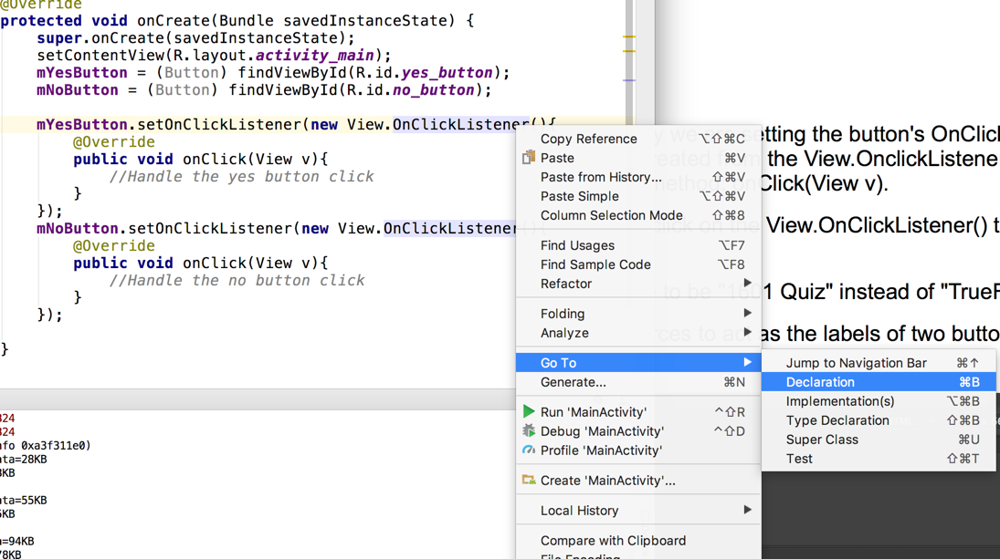

COMP 1601 Winter 2020
Tut05 -From XML Layout to Live Java Objects
© L.D. Nel 2020
Revisions:
Description
The purpose of this tutorial is get you working with Java objects that represent the components layed out with XML in the previous tutorials and to start writing java code by building the listeners that listen for clicks on the buttons you layed out previously. Here we take the first steps to bring our application to life.
This tutorial will also start to introduce the important java concepts that you need to know to build android apps: objects, classes, inheritance, annonymous inner subclasses, and lambda expressions. This is a lot to understand and this tutorial will only be the beginning.
The tutorial app is based on the GeoQuiz app built in Chapter 1 of "Android Programming: The Big Nerd Ranch Guide", 3/e by Bill Phillips, Chris Stewart, and Kristin Marsicano ©2017
If you have trouble with the java parts the recommended book Java Programming for Android Developers has good and lengthy explanations.
If you have time do the optional part at the end as well (you will need some of this to do the first assignment).
You need to demonstrate your exercise to the TA or Prof. before you leave the class to get credit for it. If you complete, or make significant progress on the exercise you will get a mark of 2. If you make some progress you will get a mark of 1 and can "upgrade" that mark to a 2 by showing your completed work within one week of this exercise. 0 marks for a no-show or unsufficient progress.
Part I: Background
Demo Code
Start with your TrueFalseQuiz answer code from the previous tutorial 03. (We've attached our version as the demo code.) Open that project and verify that it runs. Whenever you open a cut-and-paste copy of another project (like our demo code) always clean the project by executing
Build->Clean Project
and then
Build->Rebuilt Project
otherwise you will likely not be allowed to install the app on an AVD.
Run the project on an AVD:
Problem 1) The MainActivity class
In Android Studio open the app/java/com.comp1601.truefalsequiz/MainActivity.java class file:
This is our first java code that we are looking at in this app. Here are some things to observe:
1) MainActivity is a java class that inherits from, or extends, class AppCompatActivity. Superclass AppCompatActivity provides compatibility support for older versions of Android that is why we subclass it.
2) Notice the import statements. These make the java classes our code depends on available. You will be adding many import statements as you use classes from both the java language itself and java classes that are part of the android sdk.
3) Our MainActivity class has an instance method onCreate(Bundle). This method is called when a MainActivty object is created at application launch. Two things are happening when this method executes: the superclass's version of the same method is given an opportunity to run and second the setContentView(R.layout.activity_main) is called to create the UI layout objects from the activity_main.xml file's content (that you created previously a tutorial).
This last step is called inflating the layout. It means the XML specification of the component is read and the data used to initialize the actual java View objects that are created.
Recall our activity_main.xml file looks something like the following:
Here are some important observations:
1)Files in the res section of a project describe resources. Resources are not executable java code. They are things like XML files, images, fonts, audio files etc.
2) Some of the resources, like the layout, are given ID's when the application is compiled and launched. The resource is then accessed as a property of a class named R. For example in the setContentView(R.layout.activity_main) the layout resource is being accessed by its ID: R.layout.activity_main. which was assigned to it automatically.
String resources are also assigned ID's. In particular, we could set the title of the app by executing a method: setTitle(R.string.app_name).
However UI components are typically NOT assigned an ID automatically. We have to do that ourselves if we want to access them from the java code. In this case our TextView and Button resources will NOT have been assigned an ID. Assign ID's to the buttons using an android:id XML attribute as follows:
android:id="@+id/yes_button"
android:id="@+id/no_button"
Also notice the text label associated with the Button XML is hard-coded, yet we had created XML string resources to represent them. Change this as follows:
android:text="@string/yes_button_label"
android:text="@string/no_button_label"
So our layout XML should look like this now:

In the above code XML code the @ symbol means we are referring to an id. The @+id means we are actually creating the id (hence the + sign) whereas the @string/yes_button_label means we are referring to an already existing string id.
With these ID's in place we can now refer to these Button layouts from within the java code which we will do next.
Problem 2) Creating Member Variables for our View Objects
Add two member variables to the MainActivity class to represent the buttons:
private Button mYesButton;
private Button mNoButton;
So the MainActivity class should look something like this:
Here are some observations:
1) Many use the convention of starting the name of class instance, or member, variables with the lower-case m prefix. We will do the same but it is not strictly necessary.
2) The Button class is likely red to warn us that the class is unknown at this point. If you hover over the red Button text you will likely see the following:
That is because we don't yet have the import statement that makes class Button available to our code. We could just add the following import statement:
import android.widget.Button;
However Android Studio tries to help out by providing a shortcut to do this -which you will probably use often.
If you click on the red Button text you will likely see:
And if you press Option+Return (or Alt+Enter) the import statement will be added for you:
We now have variables of class Button that can refer to the view we plan to inflate from the XML specification of the buttons.
Problem 3) Inflating the Buttons
Our MainActivity class inherits an Activity method:
public View findViewById(int id)
That will produce a View-subclass object from the XML resource data identified by the int id. We will use this to create a java Button and initialize our java member variables in the onCreate() method of our MainActivity class. Add the following two lines of code to the onCreate() method:
mYesButton = (Button) findViewById(R.id.yes_button);
mNoButton = (Button) findViewById(R.id.no_button);
In the above example (Button) findViewById(...) expression means we are casting the result of findViewById(...) to be a Button object. Recently improvements to java and android studio have made these casts redundant -so lets deal with that.
If you click on the (Button) part of the expression you will likely see
If you click on the lightbulb icon is will offer a fix to remove the redundancy:
Choose that option to remove the redundant cast and do the same for the other button as well.
Problem 4) Adding Listeners
The Android architecture uses event-driven programming. That means that we add listener code to components, like buttons, that will run when the event they are listening for happens (e.g. the button is clicked).
Here we are going to add listeners to our inflated Button objects. The syntax will seem a bit odd and we will explain that shortly.
Add the following code to attach an onClick() listeners to the buttons:
The syntax is a bit tricky. We are setting the button's OnClickListener to be an instance (i.e. object) of a class created from the View.OnclickListener interface by implementing it's only interface method: onClick(View v).
If you want to see this interface click on the View.OnClickListener() text, right click and select Go To->Declaration:

It will show how View.OnClickListener is defined:
An interface in java is a class-like thing that only specifies method signatures that must be implemented.
Our listener syntax above uses an anonymous inner subclass in java. If you have trouble understanding this google that term and you should come across various explanations. These are used a lot in Android programming for event handling (ask questions in class if you don't understand this.)
What we have done at this point is to create methods that will run when the buttons are clicked. Right now they won't do anything but we will get them to generate some output next.
Problem 5) Making Toasts
Android has a simple pop-up message called a Toast. (Like raising your glass and making a toast.) We want to make a toast when you click on a button.
To keep in good programming form we will first add XML string resources to use as our toast messages. Add the following XML string resources:
<string name="correct_answer_toast">Correct</string>
<string name="wrong_answer_toast">Wrong!</string>
And while you are at it change the question text to be something like "Is Java an Object-Oriented Language?"
To make a toast you call the following Activity method:
public static Toast makeText(Context context, int resID, int duration)
static means the method will be invoked on a class and not an object. Context is typically the Activity object in which the code occurs (Activity is a subclass of Context). The duration parameter is one of two Toast constants that specify how long the toast should be visible on screen.
To make a toast you create a Toast instance with Toast.makeText(...) and the execute it's show() method:
Problem 6) Run the App
Run the app on an AVD and observe that when you click a button you see the corresponding toast:
When you have completed these problems demonstrate your code to the TA or Prof. to get credit for the tutorial.Â
Optional 1) Manipulating String Resources
In the previous problem our toast message was a string obtained using its integer resource id. Sometimes you will want to get the actual string, manipulate it a bit, and then toast with the resulting text string (not an integer). Modify the code as shown below. This time we are first obtaining a string and then writing it to System.out and also using it for the toast message. Run the code and notice the toast is now actually the label of the button we pressed. Also notice the message being printed out on the run window as a result of the System.out.println() java expression. This can be very helpful for simple debugging.
Optional 2) Lambda Expressions
Java 1.8.x has a convenient short form for representing the listeners we have built out of annonymous inner subclasses in our java code. They allow you to replace the following code:
mYesButton.setOnClickListener(new View.OnClickListener(){
@Override
public void onClick(View v){
//Handle the yes button click
String s = getString(R.string.yes_button_label);
System.out.println("YOU PRESSED " + s );
Toast.makeText(MainActivity.this,
s,
Toast.LENGTH_SHORT).show();
}
});
with the following (Lambda Expression) instead:
mYesButton.setOnClickListener(v -> {
//Handle the yes button click
String s = getString(R.string.yes_button_label);
System.out.println("YOU PRESSED " + s );
Toast.makeText(MainActivity.this,
s,
Toast.LENGTH_SHORT).show();
});
To allow this you have to ensure that the language level is set to java 1.8. You can set this in the dialog at File->Project Structure:
With this 1.8 compatibility set if you now hover your mouse over the new View.OnClickListener() expression you should see an option to change the code to the Lambda expression (you could also code it manually):
If you press Option+Return (Alt+Enter) Android Studio again offers to replace the code with the appopriate Lambda expression:
The code using Lambda expressions would now look like below. You don't have to use Lambda expression in the course if you don't want to but it is more and more likely that you will see them when looking at online code examples.